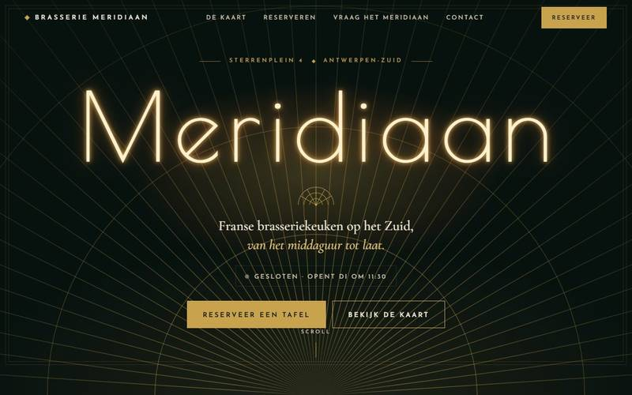

STS Digital is een jong bedrijf uit Antwerpen. Eén persoon, Snymis, en een paar agents die hem helpen. Geen kantoor, geen verkopers. Hij doet onderzoek naar AI die werk overneemt van kleine zaken en gebruikt dat onderzoek elke dag voor zijn eigen werk. Waar op deze site ‘wij’ staat, bedoelen we Snymis en zijn agents.
Drie stappen, altijd in deze volgorde
Een verkenner zoekt. Hij zoekt in Vlaanderen zaken die klanten ’s avonds op hun gsm niet of slecht vinden. Alleen met wat die zaak zelf openbaar maakte: haar Google-profiel, openingsuren en adres.
Een bouwer maakt het voorbeeld. Een werkende site op naam van de zaak, zonder kosten en zonder verplichting, niet opgenomen in zoekmachines en enkel met de zaak zelf gedeeld. Bij dat voorbeeld hoort een eerlijke blik op het Google-profiel en op hoe de huidige site op een gsm laadt.
Dan stopt de machine. Snymis leest elk bericht dat naar een zaak vertrekt en keurt het goed of niet. Er vertrekt niets dat hij niet gelezen heeft; dat staat ook zo in onze privacyverklaring. Bevalt het voorbeeld, dan volgt een vast bedrag op papier en blijf jij eigenaar van domeinnaam en inhoud. Bevalt het niet, dan verdwijnt het weer. Speel ze hieronder na, op een verzonnen buur.
Van radar tot gesprek
Zo komt een zaak bij ons op tafel: vier stappen, en op het einde een mens.
Hieronder spelen we onze echte werkwijze na op een verzonnen buur uit de sector op het bord. Wat de verkenner bekijkt, welke publieke gegevens de bouwer gebruikt, hoe het voorbeeld eruitziet, en dat het eerste bericht wacht tot Snymis het gelezen heeft. De buur is fictief en de score is een illustratie; de stappen zijn echt.
Hieronder: een verzonnen buur. De echte cijfers van een zaak kennen we niet.
De stappen openen vanzelf. Klik op een stap om ze meteen te openen.
De verkenner zoekt in Vlaanderen zaken die klanten ’s avonds op hun gsm niet of slecht vinden. Hij leest enkel wat een zaak zelf publiek maakte. Wat hij bij deze buur noteerde:
0op 100
illustratie van hoe we kijken, geen meting
Dezelfde zes vragen als in de zichtbaarheidscheck van Gereedschap en dezelfde rekenregel. Zet een signaal aan of uit en de ring volgt. De stand van de buur is verzonnen.
De bouwer gebruikt enkel wat de zaak zelf publiek maakte en zet er een werkend voorbeeld van een site mee in elkaar. Het staat niet in zoekmachines en wordt enkel met de zaak gedeeld.
Dan stopt de machine. Het eerste bericht aan de zaak staat klaar, in u-vorm en zonder prijs, en wacht tot Snymis het gelezen heeft. Hij stuurt het, past het aan of schrapt het.
Wacht op goedkeuring van Snymis
voorbeeldbericht (ontwerp)
OnderwerpEen werkend voorbeeld van een site voor {zaak}
Dag,
Ik ben Snymis van STS Digital in Antwerpen. {aanleiding}
Met wat u zelf publiek maakte, uw openingsuren, uw adres en uw profiel, heb ik een werkend voorbeeld van een site op naam van uw zaak gebouwd. Het staat niet in zoekmachines; enkel u krijgt de link.
Wilt u het bekijken? Eén antwoord volstaat, ook een nee. Vraagt u het, dan verwijder ik het voorbeeld binnen vijf werkdagen en krijgt u geen tweede bericht.
Vriendelijke groeten,
Snymis, STS Digital, Antwerpen
Reageert een zaak niet, dan geldt wat in privacy 2.2 staat: enkel publieke gegevens · niet geïndexeerd · één contact · weg na 30 dagen zonder reactie of binnen 5 werkdagen op vraag.
De buur, de signalen en de score in deze kamer zijn verzonnen. De vier stappen en de goedkeuring door een mens zijn echt: er vertrekt niets dat Snymis niet gelezen heeft.
De straat
Oude gevel, nieuwe gevel: drie verzonnen zaken, echte techniek.
Links een verzonnen oude site zoals er nog veel zijn: klein lettertype, geen belknop, een foto uit 2011 die niet laadt. Rechts de demo die we voor dezelfde verzonnen zaak bouwden. Schuif, vergelijk, en stap binnen op je gsm.
Fictieve zaak, fictieve oude site, fictief adres. De techniek erachter is echt.
Brasserie Meridiaan
Antwerpen-Zuid · Horeca · verzonnen zaak

oude gevelnieuwe gevel
Wat je hier kunt proberen
Kijk of ze nu open is: de openingsuren beslissen dat in de pagina zelf.
Filter de kaart en vraag een tafel aan via het reservatieformulier.
Stel de gescripte WhatsApp-assistent een vraag; hij antwoordt met de uren van de zaak.
Typ je naam op het bord en je ziet eerst een schets op jouw naam. Daarna bouwt Snymis het echte voorbeeld met jouw echte gegevens, zonder kosten en zonder verplichting; pas daarna beslis jij.
Wat werkt vandaag, wat is prototype, wat is onderzoek
We noemen de dingen zoals ze zijn. Drie lampen, en geen enkele brandt harder dan de werkelijkheid: vijf dingen die vandaag werken, drie prototypes die enkel bij Snymis draaien en nog bij geen klant, vier vragen die we onderzoeken.
Werkt vandaag
Werkt vandaag
De werkwijze hierboven: een verkenner zoekt, een bouwer maakt het voorbeeld en Snymis keurt elk bericht goed voor het vertrekt.
Werkt vandaag
Een gratis, werkend voorbeeld van een website, gemaakt met publieke gegevens, met een eerlijke blik op het Google-profiel en op hoe de huidige site op een gsm laadt.
Werkt vandaag
De Doorlichting: een agent leest de cijfers van een verzonnen zaak, op deze site.
Gratis gereedschap dat in je browser blijft: zichtbaarheidscheck, WhatsApp-knop met QR-code, Google-voorbeeld en het Google-kaartje om 19 u.
Prototype
Prototype
Kawa: een assistent die lokaal bij ons draait en onthoudt wat hij leert.
Prototype, niet op deze site, nog geen klantproduct.
Prototype
sts-world: een 3D-overzicht van het werk van de agents.
Prototype, niet op deze site, nog geen klantproduct.
Prototype
webshot: fotografeert een site op een gsm.
Prototype, niet op deze site, nog geen klantproduct.
In onderzoek
In onderzoekAntwoord buiten de uren
Een klant stuurt om 21 u een vraag. Een assistent die enkel weet wat jij hem leerde, zou kunnen antwoorden met je echte openingsuren en de rest aan jou overlaten. Dit bestaat nog niet als product; wat er vandaag is, staat onder Werkt vandaag.
Een voorstel per review, in jouw woorden, en niets gaat online voor jij het goedkeurt. Ook dit is onderzoek, geen product. Eerst brengen we de gewone dingen in orde: een belknop, juiste uren, een site die op een gsm laadt.
In onderzoekEen offerte-opzet uit een foto of een spraakbericht
Een klant stuurt een foto van de werf of een spraakbericht van twee minuten. Daaruit zou een eerste opzet kunnen komen die jij nakijkt en aanvult voor er iets vertrekt. We onderzoeken het; we beloven het niet.
In onderzoekJouw probleem, als we het nog niet kennen
Wat we vaak horen, onderzoeken we eerst. Kost iets jou elke week een avond, schrijf het dan in een paar zinnen; misschien staat het al op de lijst, misschien komt het erop.
In onderzoek · gescripte simulatie, geen live AI. Zo zou het kunnen werken; dit bestaat nog niet als product.
Fictieve zaak: Brasserie Meridiaan (verzonnen). Alles hieronder is gesimuleerd.
Wat de assistent weet, en niets meer
Klantvragen, aanklikbaar
In onderzoek · gescripte simulatie, geen live AI. De teksten zijn vooraf geschreven.
Fictieve zaak: Kapsalon Lumen (verzonnen). Reviews en antwoorden zijn gesimuleerd.
Wie is Snymis
Eén persoon, een paar agents, en elk bericht gelezen voor het vertrekt.
Ik ben Snymis. Ik werk vanuit Antwerpen, zonder kantoor en zonder verkopers, en STS Digital is een jonge zaak. Ik doe onderzoek naar AI die werk overneemt van kleine zaken, en ik gebruik dat onderzoek elke dag voor mijn eigen werk: een verkenner zoekt, een bouwer maakt het voorbeeld, en ik lees elk bericht voor het naar een zaak gaat.
Er zit geen team achter de schermen. De agents zoeken en bouwen; beslissen doe ik. Wat je me schrijft, lees ik zelf, en wat ik terugstuur, heb ik zelf geschreven.
Liever eerst kijken dan praten? Dat begrijp ik. Daarom staat het voorbeeld er altijd eerst, en beslis jij daarna.
Deze maand
Wat wij niet zijn
Geen team van tien, geen klantenlogo’s die we niet mogen tonen, geen tellers die niet kloppen, geen verkoper die terugbelt. Wel iemand van hier die eerst bouwt en dan pas praat.
Zo komt u op onze radar
Kreeg u een bericht van ons zonder dat u iets vroeg?
Dan vond mijn verkenner uw zaak, en gebruikte ik enkel wat u zelf openbaar maakte: uw Google-profiel, uw openingsuren en uw adres. U kreeg van mij één bericht, en dat las en keurde ik zelf goed voor het vertrok. Het voorbeeld dat erbij hoort staat niet in zoekmachines en deel ik enkel met u. Reageert u niet, dan verwijder ik het na 30 dagen; vraagt u het, dan binnen 5 werkdagen. Zo staat het in de privacyverklaring, en zo speelt de simulatie hierboven het na.